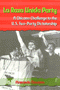
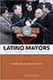

|
200 Years of Latino History in Philadelphia
Al Día, The Staff of
200 pp • 8.5x11 • Fall 2012
cloth 978-0-578-10660-1 |

| Understanding
Mainland Puerto Rican Poverty
Baker, Susan S. 256 pp • 6x9 • Fall
2002
paper 978-1-56639-970-8
cloth 978-1-56639-969-2
Excerpt available |
 |
American
Conversations
Puerto Ricans, White Ethnics, and Multicultural Education
Bigler, Ellen 296 pp • 5.5x8.25 •
Spring 1999
paper 978-1-56639-688-2
cloth 978-1-56639-687-5
Excerpt available |
 |
Borderless
Borders
U.S. Latinos, Latin Americans, and the Paradox of Interdependence
edited by Bonilla, Frank, Edwin Mel�ndez, Rebecca Morales and Mar�a
de los Angeles Torres 336 pp • 6x9 •
Spring 1998
paper 978-1-56639-620-2
cloth 978-1-56639-619-6
Excerpt available |
|
Identity
and Power
Puerto Rican Politics and the Challenge of Ethnicity
Cruz, Jos� E. 296 pp • 6x9 • Spring
1998
paper 978-1-56639-605-9
cloth 978-1-56639-604-2
Excerpt available |
 |
Sponsored
Identities
Cultural Politics in Puerto Rico
D�vila, Arlene M. 301 pp • 5.5x8.25 •
Fall 1997
paper 978-1-56639-549-6
cloth 978-1-56639-548-9
Excerpt available |
 |
New
Immigrants, Old Unions
Organizing Undocumented Workers in Los Angeles
Delgado, H�ctor L. 200 pp • 5.5x8.25
• Spring 1993
paper 978-1-56639-205-1
cloth 978-1-56639-044-6 |

|
Latino Lives in America
Making It Home
Fraga, Luis R., John A. Garcia, Rodney E. Hero, Michael Jones-Correa, Valerie Martinez-Ebers, and Gary Segura
224 pp • 5.5x8.25 • Spring 2010
paper 978-1-43990-049-9
cloth 978-1-43990-048-2
Excerpt available |
 |
Seeking
Community in a Global City
Guatemalans and Salvadorans in Los Angeles
Hamilton, Nora and Norma Stoltz Chinchilla 304
pp • 6x9 • Spring 2001
paper 978-1-56639-868-8
cloth 978-1-56639-867-1
Excerpt available |
 |
Latina
Politics, Latino Politics
Gender, Culture, and Political Participation in Boston
Hardy-Fanta, Carol 272 pp • 6x9 •
Spring 1993
paper 978-1-56639-032-3
cloth 978-1-56639-031-6 |
|
Latinos
and the U.S. Political System
Two-Tiered Pluralism
Hero, Rodney E. 256 pp • 6x9 • Spring
1992
paper 978-0-87722-910-0
cloth 978-0-87722-909-4
Excerpt available |
 |
Making a Global Immigrant Neighborhood
Brooklyn's Sunset Park
Hum, Tarry
296 pp • 6x9 • Spring 2014
paper 978-1-43991-091-7
cloth 978-1-43991-090-0 |
 |
How
Did You Get to Be Mexican?
A White/Brown Man’s Search for Identity
Johnson, Kevin R. 264 pp • 6x9 •
Fall 1999
paper 978-1-56639-651-6
cloth 978-1-56639-650-9
Excerpt available |

|
Espejos y ventanas (Mirrors and Windows)
historias orales de trabajadores agricolos y sus familias (Oral Histories of Mexican Farmworkers and the Families)
edited by Lyons, Mark, and August Tarrier
318 pp • 6x9 • Spring 2012
paper 978-0-971-2996-6-5 |
 |
Las
Hermanas
Chicana/Latina Religious-Political Activism in the U.S. Catholic
Church
Medina, Lara 232 pp • 5.5x8.25 •
Spring 2004
paper 978-1-59213-483-0
cloth 978-1-59213-250-8
Excerpt available |
|  |
La
Raza Unida Party
A Chicano Challenge to the U.S. Two-Party Dictatorship
Navarro, Armando 384 pp • 7x10 •
Spring 2000
paper 978-1-56639-771-1
cloth 978-1-56639-770-4 |
 |
Latino Mayors
Political Change in the Postindustrial City
edited by Orr, Marion and Domingo Morel, foreword by Luis Ricardo Fraga
312 pp • 6x9 • Fall 2017
paper 978-1-4399-1543-1
cloth 978-1-4399-1542-4
|
 |
Mexican Voices of the Border Region
Ortiz, Laura Velasco and Oscar F. Contreras, with translations by Sandra del Castillo
238 pp • 6x9 • Spring 2011
paper 1-59213-909-4
cloth 978-1-59213-908-8
Excerpt available |

|
Oye Como Va!
Hybridity and Identity in Latino Popular Music
Pacini Hernandez, Deborah
238 pp • 6x9 • Fall 2009
paper 978-1-4399-0090-1
cloth 978-1-4399-0089-5
Excerpt available
|
 |
Mexican
American Women Activists
Identity and Resistance in Two Los Angeles Communities
Pardo, Mary 322 pp • 5.5x8.25 •
Fall 1997
paper 978-1-56639-573-1
cloth 978-1-56639-572-4
Excerpt available |
 |
Crowding
Out Latinos
Mexican Americans in the Public Consciousness
Portales, Marco 240 pp • 6x9 • Fall
1999
paper 978-1-56639-743-8
cloth 978-1-56639-742-1
Excerpt available |

|
The Cubans of Union City
Immigrants and Exiles in a New Jersey Community
Prieto, Yolanda
224 pp • 6x9 • Spring 2009
paper 978-1-59213-300-0
cloth 978-1-59213-299-7
Excerpt available |
 |
Home
Girls
Chicana Literary Voices
Quintana, Alvina E.
176 pp • 5.5x8.25
• Fall 1995
paper 978-1-56639-373-7
cloth 978-1-56639-372-0 |

|
M�sica Norte�a
Mexican Migrants Creating a Nation Between Nations
Ragland, Cathy
268 pp • 6x9 • Spring 2009
paper 978-1-59213-747-3
cloth 978-1-59213-746-6
Excerpt available |

|
Celebrating Debutantes and Quinceañeras
Coming of Age in American Ethnic Communities
Rodriguez, Evelyn Ibatan
226 pp • 6x9 • Spring 2013
paper 978-1-4399-0628-6
cloth 978-1-4399-0627-9
|
 |
Terrorizing Latina/o Immigrants
Race, Gender, and Immigration Politics in the Age of Security
Sampaio, Anna
230 pp • 6x9 • Fall 2015
paper 978-1-4399-1286-7
cloth 978-1-4399-1285-0
|
 |
Language
Policy and Identity Politics in the United States
Schmidt, Sr., Ronald 296 pp • 6x9 •
Spring 2000
paper 978-1-56639-755-1
cloth 978-1-56639-754-4
Excerpt available |
 |
Tortilleras
Hispanic and U.S. Latina Lesbian Expression
edited by Torres, Lourdes and Inmaculada Perpetusa-Seva 288
pp • 7x10 • Fall 2002
paper 978-1-59213-007-8
cloth 978-1-59213-006-1
Excerpt available |
 |
The
Puerto Rican Movement
Voices from the Diaspora
edited by Torres, Andr�s and Jos� E. Vel�zquez 432
pp • 6x9 • Spring 1998
paper 978-1-56639-618-9
cloth 978-1-56639-617-2
Excerpt available |
 |
Latinos
in New England
edited by Torres, Andrés
344 pp • 6x9 • Spring 2006
paper 978-1-59213-417-5
cloth 978-1-59213-416-8
Excerpt available |

|
The New York Young Lords and the Struggle for Liberation
Wanzer-Serrano, Darrel
244 pp • 6x9
• Spring 2015
paper 978-1-4399-1203-4
cloth 978-1-4399-1202-7 |
 |
Sounding Salsa
Performing Popular Latin Dance Music in New York City
Washburne, Christopher
272 pp • 6x9 • Spring 2008
paper 978-1-59213-316-1
cloth 978-1-59213-315-4
Excerpt available |
 |
From
Puerto Rico to Philadelphia
Puerto Rican Workers and Postwar Economies
Whalen, Carmen Teresa 328 pp • 7x10 •
Fall 2000
paper 978-1-56639-836-7
cloth 978-1-56639-835-0
Excerpt available |
 |
The
Puerto Rican Diaspora
Historical Perspectives
edited by Whalen, Carmen Teresa and V�ctor V�zquez-Hern�ndez
320 pp • 6x9 • Spring 2005
paper 978-1-59213-413-7
cloth 978-1-59213-412-0
Excerpt available |